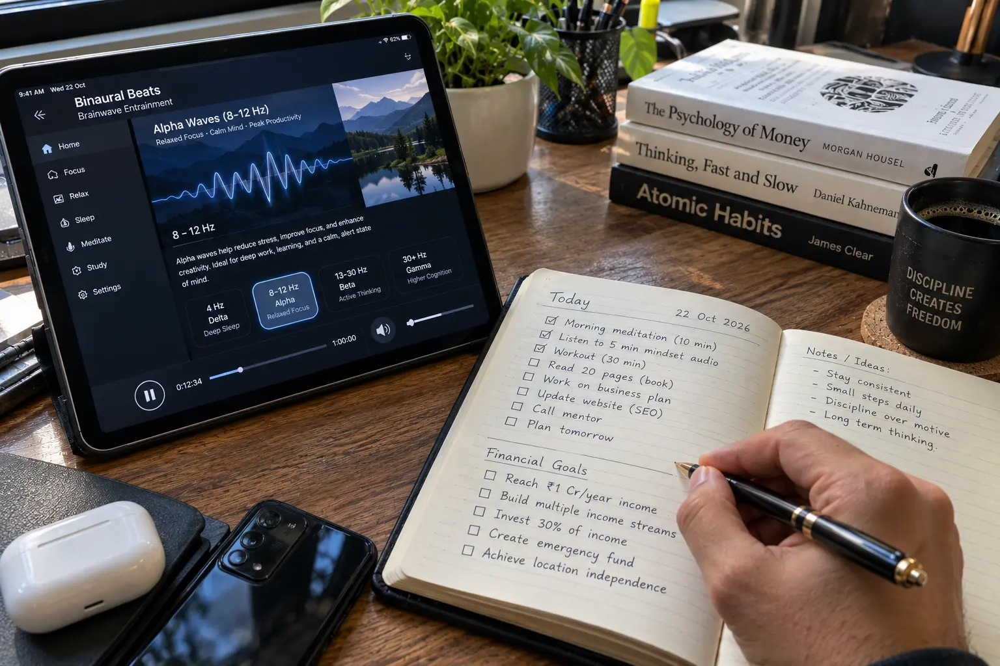

I Audited Forbidden China Wealth: The Truth About The 5-Minute Audio Routine (2026)
Let's be brutally honest right from the start. If you are reading this because you think listening to an audio track for five minutes will magically pay your mortgage, cancel your credit card debt, or make money fall from the sky—you are going to be disappointed.
The internet is flooded with "manifestation" programs that promise effortless riches. Forbidden China Wealth enters this crowded space with a highly dramatic origin story involving a mysterious "Mr. Xing" and a supposedly secret Chinese wealth frequency.
As consumer investigators, we ignore the marketing fluff. We wanted to know what happens after you pay the $39. Is it just a scam, or is there actual psychological value in this daily listening routine? Here is our unfiltered audit.
📌 TL;DR: The Brutal Truth
Will it print money for you? NO. But that doesn't mean it is useless. The core product is a carefully engineered binaural beat / frequency audio track designed to induce a state of deep focus. Its true value is psychological. If your brain is constantly trapped in a "poverty mindset" (stressing about bills and limitations), you miss opportunities right in front of you. Top athletes and CEOs use visualization daily. If you treat this $39 audio as a tool to aggressively rewire your focus and confidence, it is a highly effective daily habit. Best of all, it is backed by an iron-clad 365-day refund policy, meaning you can test its effects with zero risk.
1. What Do You Actually Receive For $39?
Despite the story of physical relics or secret vaults, the product delivered to you today is entirely digital. Upon checkout, you do not receive a physical CD in the mail. You get instant access to a digital dashboard.
Inside the portal, you receive:
- The Core Audio Track: A high-quality digital MP3 file featuring specific sound frequencies and ambient background noise.
- The Routine Guide: Instructions to put on headphones and listen to the track for roughly 5 minutes daily, preferably in a quiet space.
- Bonus Mindset Guides: Additional PDF materials focused on wealth building and positive psychology.
2. ⚠️ The Testimonial Reality Check
The sales page features glowing testimonials of people receiving sudden promotions, unexpected checks in the mail, or massive business growth shortly after using the audio.
Action vs. Magic
It is vital to understand the difference between causation and correlation. Did the audio write a business plan for them? No. Did the audio apply for a higher-paying job? No.
What likely happened is that the daily 5-minute routine acted as a powerful psychological anchor. By starting their day visualizing success instead of stressing about debt, they noticed opportunities they previously ignored. The audio is the catalyst; your action is the vehicle. Do not buy this if you intend to sit on the couch and wait for a check.

3. Audit: Marketing Hype vs. Psychological Reality
To evaluate the true value of the product, we have to strip away the "secret ancient" marketing and look at the actual product format.
🔬 Feature Audit: Magic vs. Psychology
| Sales Claim | The Reality | Status |
|---|---|---|
| Secret Ancient Chinese Origin | A marketing narrative used to make standard frequency audio sound mysterious and exclusive. | ⚠️ STORYTELLING |
| Guaranteed Financial Windfalls | Money does not materialize from sound. It materializes from your changed actions. | ❌ FALSE |
| Rewires Poverty Mindset | Binaural beats and focused listening genuinely help reduce stress and improve mental clarity. | ✔ VERIFIED |
| 365-Day Money-Back Guarantee | Processed securely by ClickBank, meaning your purchase is fully protected for a full year. | ✔ VERIFIED |
Ready to rewire your mindset and test the audio risk-free?
Access The Official Audio Portal >>4. The 365-Day Guarantee (Is It Real?)
One of the biggest concerns with digital products is whether you can actually get your money back if you don't like it.
The good news is that Forbidden China Wealth uses ClickBank as its payment processor. ClickBank is a massive, highly regulated US-based retailer. Because ClickBank processes the transaction, they enforce the refund policy, not the product creator. If you listen to the audio for 6 months and feel no change in your mindset, you can log into ClickBank's customer service portal and click "Refund." It is automated and hassle-free.
5. Financial Verdict: Should You Buy It?
If you are struggling to pay your rent this week and are looking for a miracle cure, do not spend your last $39 on this. Save your money and look for free guided meditations on YouTube.
Our Mindset Recommendation
However, if you have $39 of disposable income and you realize that your own negativity, stress, and "poverty mindset" are holding you back from making aggressive career or business moves, this audio is a fantastic investment in yourself.
Think of it like buying a premium gym membership for your brain. The 5-minute daily routine forces you to stop, center yourself, and align your subconscious with wealth-building. Because it carries a massive 365-day refund policy, you can essentially test-drive the audio for a whole year with absolutely zero financial risk.
Use the secure official checkout below to bypass fake affiliates and activate your 365-day guarantee.
Secure Your Instant Audio Access Now >>